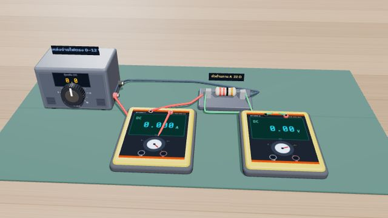
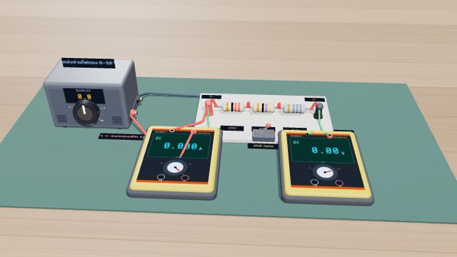
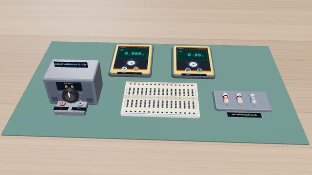
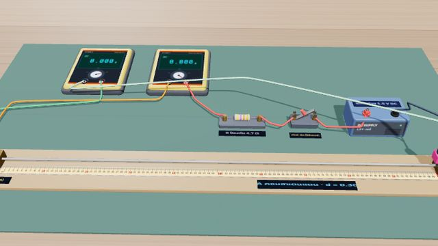
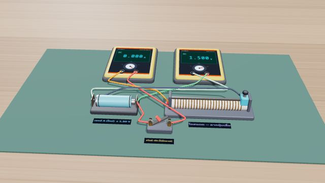
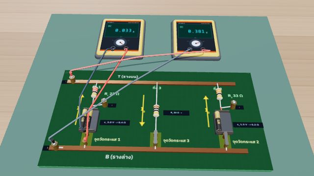
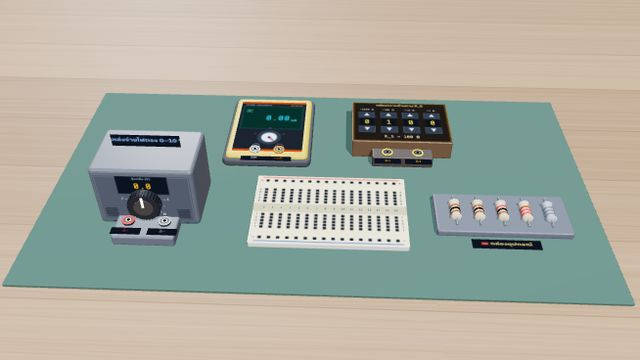

กฎของโอห์ม · การต่อตัวต้านทาน · แรงเคลื่อนไฟฟ้าและความต้านทานภายใน · สภาพต้านทาน · กฎของเคอร์ชอฟฟ์ · กำลังไฟฟ้า — ต่อวงจรและอ่านมิเตอร์ในภาพ 3D เอง บันทึกผล เขียนกราฟ แล้วหาค่าปริศนาในแต่ละแลป
กราฟ V–I ของตัวต้านทานและตัวนำที่ไม่เป็นไปตามกฎของโอห์ม · การต่ออนุกรมและขนาน · สภาพต้านทานของลวด

ต่อวงจรกับโวลต์มิเตอร์และแอมมิเตอร์เข็ม ปรับแหล่งจ่าย อ่านค่าแล้วเขียนกราฟ V–I · ตัวต้านทานได้เส้นตรง (ความชัน = R) หลอดไฟได้เส้นโค้งเพราะไส้ร้อนขึ้น · หาค่าความต้านทานปริศนา X

แผงวงจร 3 ช่อง แตะใส่/ถอดตัวต้านทาน โยกสวิตช์สลับอนุกรม-ขนาน · วัด V คร่อมชุดและ I รวมหา R สมมูล · ตรวจ R = ΣR และ 1/R = Σ(1/R) · แอมมิเตอร์ 2 ย่านวัด · หาค่าตัวต้านทานปริศนา X แล้วทำนาย R ของชุดขนาน

หยิบตัวต้านทาน สายจัมเปอร์ สายไฟเลี้ยง และมัลติมิเตอร์จากกล่องอุปกรณ์ แล้วแตะรูบนเบรดบอร์ดวางเอง · เลือกจุดวัดกระแส (อนุกรม) และจุดวัดความต่างศักย์ (คร่อม) เอง · โปรแกรมแก้วงจรจริงด้วยวิธีวิเคราะห์โหนด · ลัดวงจรและวงจรเปิดเกิดขึ้นจริง · หาค่า R ปริศนา

ขึงลวดยาว 1 m บนไม้เมตร ลากตัวแตะเปลี่ยนความยาว L · มัลติมิเตอร์วัด V คร่อมลวดและ I · กราฟ R–L ความชัน = ρ/A · เทียบลวดเส้นเล็ก-ใหญ่ และคอนสแตนแตนกับนิโครม · หา ρ ของลวดปริศนา X แล้วระบุวัสดุ
แรงเคลื่อนไฟฟ้ากับความต้านทานภายใน · กฎของเคอร์ชอฟฟ์ · สะพานวีตสโตน

ต่อเซลล์กับรีโอสแตต ลากปุ่มเลื่อนเปลี่ยนความต้านทานภายนอก · มัลติมิเตอร์วัด V ที่ขั้วและ I · กราฟ V–I จุดตัดแกน = ε ความชัน = −r · เทียบเซลล์ใหม่กับเซลล์เก่า · หา ε และ r ของเซลล์ปริศนา X

วงจร 3 กิ่งบนแผงวงจร ย้ายแอมมิเตอร์วัดกระแสทีละกิ่ง (ค่าลบเมื่อไหลสวนทิศอ้างอิง) · แตะโพรบวัดความต่างศักย์ระหว่างจุดใดก็ได้ · ตรวจ ΣI = 0 ที่จุดต่อ และ Σε = ΣIR รอบลูป · ทำนายกระแสก่อนวัด · หา ε และ R ในกล่องดำ X

ต่อสะพาน 4 แขนบนเบรดบอร์ดเองด้วยตัวต้านทาน 100 Ω · 1 kΩ · 220 Ω · กล่องความต้านทาน R_S และแกลแวนอมิเตอร์ (รู → รู แบบ Lab 110) · ปรับ R_S จน I_G = 0 · กราฟ I_G–R_S หาจุดสมดุลละเอียดกว่า 1 Ω · ใช้ P/Q = X/R_S หาความต้านทานปริศนา X · เทียบอัตราส่วน 1 : 1 กับ 1 : 10
กำลังไฟฟ้าและพลังงานความร้อน · เทอร์มิสเตอร์และ LDR